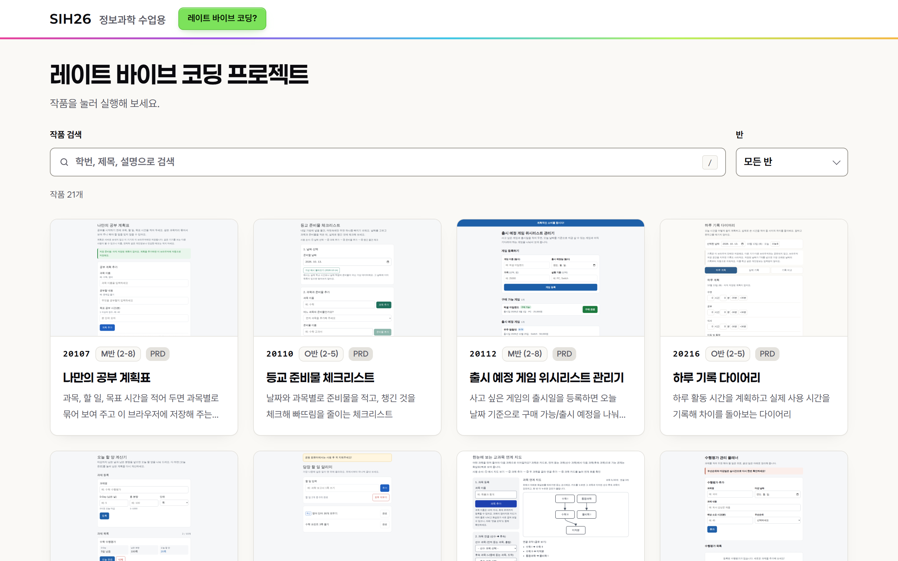
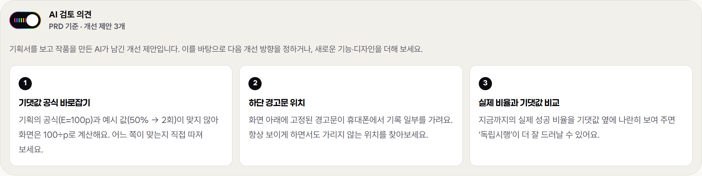

딸깍 한 번이면 끝나는 과제를,
다섯 번 고치게 만들 수 있을까
학생 21명의 첫 작품은 하루 만에 전시판에 올라갔습니다.
이 수업의 진짜 과제는 그다음부터 시작됩니다.
같은 과제를 받은 두 학생
기획을 고쳐 쓰고, 결과를 돌려 보고, 다시 묻습니다.
AI가 만든 것을 자기 기준으로 따져 봅니다.
한 번 '딸깍'하고, 나온 그대로 냅니다.
AI는 이 학생에게도 그럴듯한 결과를 줍니다.
- 한 번의 '딸깍'으로 끝나는 제출이 싫었습니다.
- 한 번에 끝나지 않는 장기 프로젝트를 경험시키고 싶었습니다.
- AI는 대단합니다. 그래도 사람이 생각하고 숙성되는 시간이 필요합니다.
바이브 코딩: 코드를 읽지 않고 만든다
2025년 2월 AI 연구자 안드레이 카파시(Andrej Karpathy)가 처음 쓴 말입니다.
만들고 싶은 것을 말로 설명하면 AI가 코드를 쓰고, 사람은 "되는 것 같으면" 넘어갑니다.
프로그래밍을 몰라도 몇 분 만에 그럴듯한 프로그램이 나옵니다.
아무도 코드를 확인하지 않으니, 틀린 부분을 찾는 단계가 없습니다.
레이트 바이브 코딩: 판단을 늦게라도, 반드시
레이트 바이브 코딩도 AI가 만들어 줍니다. 하지만 무작정 부탁하기 전에 한 번 더 생각하고, 만든 뒤에는 사람이 반드시 거치는 '판단 단계'를 붙입니다.
만드는 일은 AI에게, 맞는지 결정하는 일은 사람에게.
자율주행차와 운전자
자율주행차가 잘 달린다고 해서 운전자가 잠들어도 되는 건 아닙니다. 운전은 차가 하지만, 이상한 순간을 알아차리고 핸들을 잡는 건 사람의 몫입니다. 레이트 바이브 코딩에서 사람은 운전자석에 앉아 감독합니다.
AI에게 일을 맡기지만, 결과물은 내가 맡는다.
SIH26 수업 나눔 4한 작품이 다섯 번 자라는 흐름
-
학생
기획서(PRD)
AI와 대화하며 무엇을, 왜, 어떻게 만들지 요구명세서로 씁니다.
-
AI · 교사 운영
구현과 게시
기획서대로 만들고 직접 실행해 검증한 뒤 전시판에 올립니다.
-
AI
검토 의견 3개
만들면서 발견한 빈틈과 임의로 정한 부분을 개선 거리로 남깁니다.
-
학생
테스트와 판단
직접 써 보고, 의견마다 반영할지 보류할지와 그 이유를 씁니다.
-
학생
수정 요청서
이번에 바꿀 것을 최대 3개 고르고, 확인 방법까지 적습니다.
-
반복
1회 → 5회 개선
2단계로 돌아가 다시 구현합니다. 매번 버전 기록이 쌓입니다.
학생은 코드를 고치지 않습니다. 무엇을, 왜 바꿀지를 결정합니다.
SIH26 수업 나눔 5교사는 폴더 경로 하나만 말합니다
"작업 지시서 읽고 O반 (2-5)\PRD 진행해 줘"
- 폴더 이름에서 반과 단계를 읽습니다.
- 학생 1명당 AI 에이전트 1개, 5명씩 동시에 구현합니다.
- 휴대폰 화면·전시판 안 실행·외부 연결 없음까지 직접 실행해 확인합니다.
- 학생별 AI 검토 의견 3개를 쓰고, 전시판에 게시합니다.
전시판: 커밋 하나가 성장 기록 한 줄

-
진행 단계 배지
PRD → 1회 개선 → … → 5회 개선. 지금 어디까지 왔는지 한눈에 봅니다.
-
AI 검토 의견
작품 화면에서 스위치를 켜면 다음 개선의 출발점 3개가 펼쳐집니다.
-
제작 기록 V1, V2 …
작품 파일의 Git 이력에서 자동으로 쌓입니다. 사람이 적지 않습니다.
- V1PRD10. 13.
- V21회 개선다음 수업
- V32회 개선…
- V65회 개선마지막 개선
학생 기획서의 빈틈이 다음 수업의 교재가 됩니다
기댓값 공식
기획서는 E=100p, 예시는 "50% → 2회". 예시와 맞는 식은 100÷p입니다.
빠진 제곱근
포트폴리오 표준편차 공식에 √가 빠져, 분산을 표준편차라고 적었습니다.
엇갈린 규칙
한 기획서 안에서 "출시일 당일"을 어느 목록에 넣을지 두 절이 서로 다르게 말합니다.
AI가 정한 규칙
기획서에 없던 '순환 연결 막기'를 AI가 넣었습니다. 필요한 규칙인지는 학생이 판단합니다.

SIH26 수업 나눔 8학생은 AI와 함께 '수정 요청서'를 만듭니다
- 프로그램 이해학번·지금 단계 확인, 전시판에서 받은 HTML 첨부
- 직접 테스트 4~6개실행 전에 기대 결과를 먼저 말하고, 실제와 비교
- AI 검토 의견 판단의견마다 맞는지, 반영할지 보류할지, 왜인지
- 바꿀 것 최대 3개 구체화"예쁘게"를 확인할 수 있는 규칙으로 바꾸기
- 정해진 형식으로 제출이 대화에서 AI는 코드를 고치지 않습니다
하루, 21명, 5시간 한도의 4분의 1
| 처리한 기획서 | 21명 (M반 9명 · O반 12명) |
|---|---|
| 작업 방식 | 학생 1명당 에이전트 1개, 5개씩 동시에 |
| 사용량 | Claude Max 5x 기준 5시간 한도 약 25%, 주간 한도 약 4% 전시판 기능 개선 작업 포함 |
| Pro 요금제라면 | 5시간 한도를 넘었을 것으로 추정 → 반 단위로 나누어 진행 요금제 배율로 어림한 값 |
운영 팁
에이전트를 쓰면 교사가 컴퓨터 앞에 머무는 시간이 줄어듭니다. 한 번에 5명을 맡겨 두고, 끝난 묶음만 확인하면 됩니다.
AI에게 일을 맡기지만,
결과물은 내가 맡는다.
학생에게 하는 말이자, 저에게 하는 말입니다. 저도 AI 활용의 전문가는 아닙니다. 자주 써 보고 접하는 시간이 늘어야 실력이 는다고 믿습니다.
SIH26 수업 나눔 11